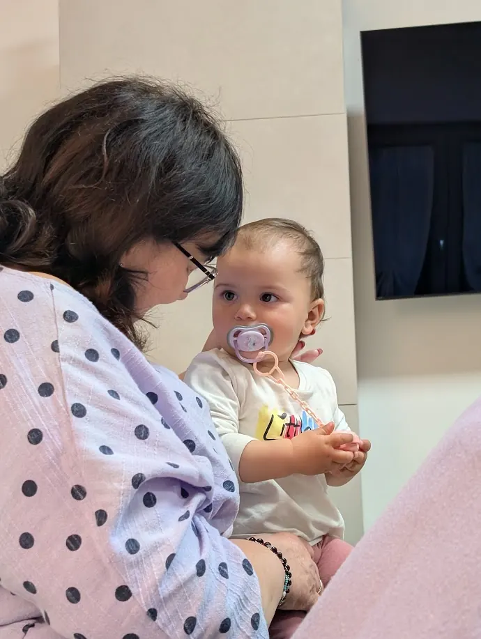
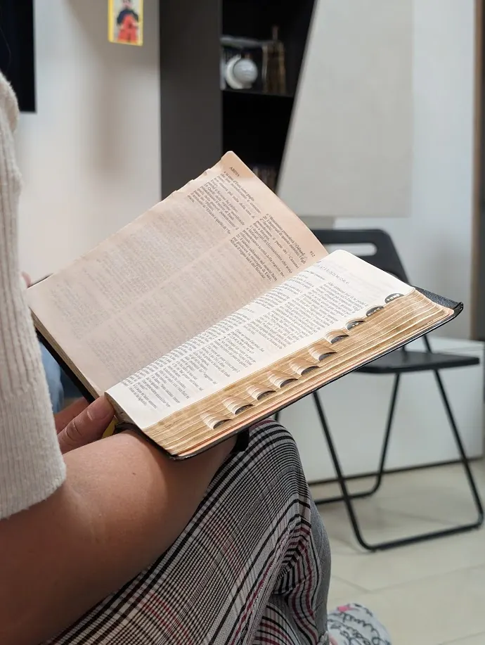

Incoraggiarsi a vicenda, a ogni età.
Il ministero delle donne è un luogo di amicizia e incoraggiamento: mamme, nonne, ragazze e lavoratrici che si ritrovano per studiare la Parola, pregare e sostenersi.
Con un caffè e tanta sincerità condividiamo le sfide della vita e scopriamo insieme cosa significa essere donne secondo il cuore di Dio.

Cosa ti aspetta
Studio della Parola
Incontri biblici pensati per le donne.
Preghiera
Ci affidiamo a Dio le une per le altre.
Amicizia
Momenti di festa, uscite e tempo insieme.
Momenti insieme

Vuoi unirti a noi?
Scrivici
Mandaci un messaggio su WhatsApp: ti diamo tutte le informazioni.
Ti presentiamo il gruppo
Ti mettiamo in contatto con chi segue il ministero, così saprai chi ti aspetta.
Vieni a trovarci
Partecipa al primo incontro: nessun impegno, solo il piacere di conoscerti.
Scopri anche

Scuola domenicale
Storie della Bibbia, canti e giochi per i più piccoli.

Giovanissimi
Serate insieme, domande vere e amicizie che durano.

Giovani famiglie
Coppie e genitori che crescono nella fede.

Chiesa in casa
Bibbia, preghiera e tavola condivisa nelle case.
Uomini
Uomini che si sostengono nella fede e nella vita.

Calcetto
La partita della settimana, aperta a tutti.
Inglese
Incontri in inglese, per chi lo parla e chi lo impara.

Aiuto ai bisognosi
Beni di prima necessità per chi è in difficoltà.